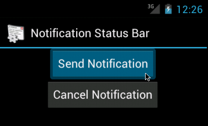
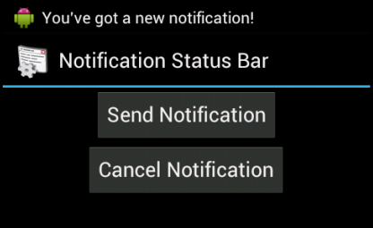
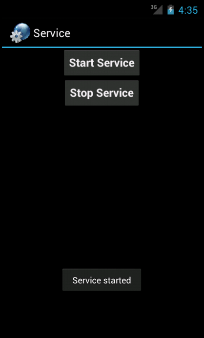
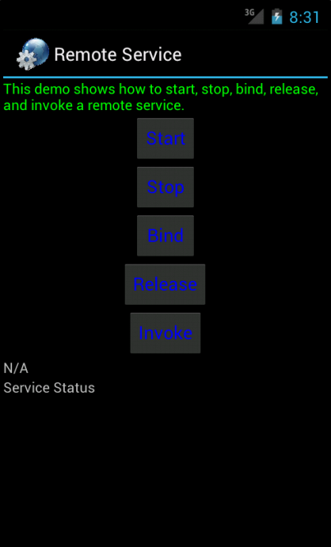
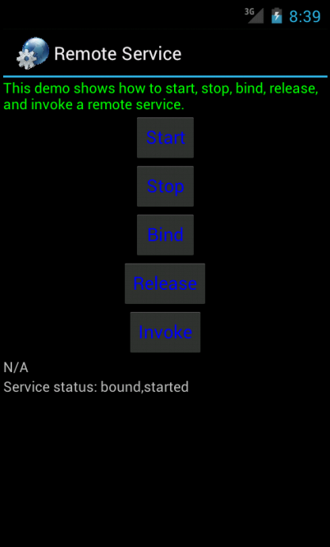
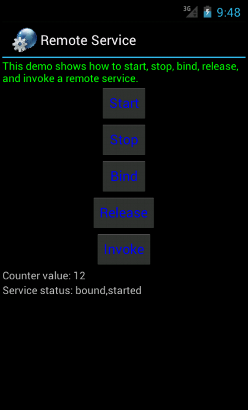

Android 4
20. Notification and Service

This chapter
We now know what Activities and Intents are. Time to move on to services. However, since services mostly interact with a user through notifications, we need to first understand how a simple program to deal with Notifications.
What are Notifications?
They are a way of alerting a user about an event that he needs to be informed about or even take some action on getting that information.
Notification on Android can be done in any of the following ways:
- Status Bar Notification
- Vibrate
- Flash lights
- Play a sound
Through the Notification, we can allow the user to launch a new activity as well. Now we will look at status bar notification since this can be easily tested on the emulator.
To create a status bar notification, we'll need to use two classes: Notification and NotificationManager.
- Notification
Defines the properties of the status bar notification like the icon to display, the test to display when the notification first appears on the status bar and the time to display. - NotificationManager
NotificationManager is an android system service that executes and manages all notifications. Hence we cannot create an instance of the NotificationManager but we can retrieve a reference to it by calling the getSystemService() method.
Once we got this handle, we invoke the notify() method on it by passing the notification object created.
So far, we have all the information to display on the status bar. However, when the user clicks the notification icon on the status bar, what detailed information should we show the user?
This is yet to be created. This is done by calling the method setLatestEventInfo() on the notification object.
What needs to be passed to this method, we will see with an example.
- Get a handle to the NotificationManager:
private NotificationManager mNotificationManager; mNotificationManager = (NotificationManager)getSystemService(NOTIFICATION_SERVICE);
- Create a notification object along with properties to display on the status bar
final Notification notifyDetails = new Notification(R.drawable.android,"You've got a new notification!",System.currentTimeMillis());
- Add the details that need to get displayed when the user clicks on the notification. In this case, I have created an intent to invoke the browser to show the website http://www.android.com
Context context = getApplicationContext(); CharSequence contentTitle = "Notification Details..."; CharSequence contentText = "Browse Android Official Site by clicking me"; Intent notifyIntent = new Intent(android.content.Intent.ACTION_VIEW,Uri.parse("http://www.android.com")); PendingIntent intent = PendingIntent.getActivity(NotificationsA.this, 0, notifyIntent, android.content.Intent.FLAG_ACTIVITY_NEW_TASK); notifyDetails.setLatestEventInfo(context, contentTitle, contentText, intent); mNotificationManager.notify(SIMPLE_NOTFICATION_ID, notifyDetails); -
Now the stage is set. Notify.
mNotificationManager.notify(SIMPLE_NOTFICATION_ID, notifyDetails);
Note that all of the above actions(except getting a handle to the NotificationManager) are done on the click of a button Start Notification. So all the details go into the setOnClickListener() method of the button.
Similarly, the notification, for the example sake is stopped by clicking a cancel notification button. And the code there is :
mNotificationManager.cancel(SIMPLE_NOTFICATION_ID);
Now, we may realize that the constant SIMPLE_NOTIFICATION_ID becomes the way of controlling, updating, stopping a current notification that is started with the same ID.
Here is our Java code, NotificationA.java:
package com.bogotobogo.notificationsa;
import android.app.Activity;
import android.app.Notification;
import android.app.NotificationManager;
import android.app.PendingIntent;
import android.content.Context;
import android.content.Intent;
import android.net.Uri;
import android.os.Bundle;
import android.view.View;
import android.view.View.OnClickListener;
import android.widget.Button;
public class NotificationsA extends Activity {
private NotificationManager mNotificationManager;
private int SIMPLE_NOTFICATION_ID;
@Override
public void onCreate(Bundle savedInstanceState) {
super.onCreate(savedInstanceState);
setContentView(R.layout.main);
mNotificationManager =
(NotificationManager)getSystemService(NOTIFICATION_SERVICE);
final Notification notifyDetails =
new Notification(R.drawable.android,
"You've got a new notification!",System.currentTimeMillis());
Button start = (Button)findViewById(R.id.notifyButton);
Button cancel = (Button)findViewById(R.id.cancelButton);
start.setOnClickListener(new OnClickListener() {
public void onClick(View v) {
Context context = getApplicationContext();
CharSequence contentTitle =
"Notification Details...";
CharSequence contentText =
"Browse Android Official Site by clicking me";
Intent notifyIntent =
new Intent(android.content.Intent.ACTION_VIEW,
Uri.parse("http://www.android.com"));
PendingIntent intent =
PendingIntent.getActivity(NotificationsA.this, 0,
notifyIntent, android.content.Intent.FLAG_ACTIVITY_NEW_TASK);
notifyDetails.setLatestEventInfo(context,
contentTitle, contentText, intent);
mNotificationManager.notify(SIMPLE_NOTFICATION_ID, notifyDetails);
}
});
cancel.setOnClickListener(new OnClickListener() {
public void onClick(View v) {
mNotificationManager.cancel(SIMPLE_NOTFICATION_ID);
}
});
}
}
AndroidManifest.xml:
<?xml version="1.0" encoding="utf-8"?>
<manifest
xmlns:android="http://schemas.android.com/apk/res/android"
package="com.bogotobogo.notificationsa"
android:versionCode="1"
android:versionName="1.0">
<uses-sdk android:minSdkVersion="14" />
<uses-permission android:name="android.permission.INTERNET" />
<application android:icon="@drawable/icon" android:label="@string/app_name">
<activity android:name=".NotificationsA"
android:label="@string/app_name">
<intent-filter>
<action android:name="android.intent.action.MAIN" />
<category android:name="android.intent.category.LAUNCHER" />
</intent-filter>
</activity>
</application>
</manifest>


Files used in this Notification example, NotificationsA.zip
Service is a fundamental component in Android. Often, applications will need to run processes for a long time without any intervention from the user, or very rare interventions. These background processes need to keep running even when the phone is being used for other activities.
To accommodate for such a requirement, android has introduced the Service component. It is a long lived component and does not implement any user interface of its own.
Typically a user interacts with a service through an activity that has a UI. The service by itself notifies the user in case of any need for user intervention.
In this article, we'll make a very simple service which runs in the background but does not have any notification features.
In order to start and stop the service, an activity called the service provider will be created.
In this example, when the service starts, it toasts a message that the service has started. When the service ends, it toasts a message that the service has ended. This is not of much use in the real sense of services. However, it simplifies the introduction of service creation and destruction.
Ideally, one of the ways could be: a service that is running should notify itself as running by putting up a status bar notification as discussed in the previous section. And when the service has completed running the notification can be removed. Through the notification, the service can give a user interface for binding to the service or viewing the status of the service or any other similar interaction with the service. The combination of service with notification will be an example I will given in the next section.
Let's talk a little bit more about services.
Binding to a service
Once a service has begun and is running in the background, any number of activities can bind to the service. In fact, if we want to bind to a service that has not started, calling to bind could initiate the service. Such a service would shut down as soon as the last user detaches from the service.
Remote service
The services defined above are those that run in the same process as the application that started it. However, we can have services that run in its own process. This is particularly useful when the service has to run for a long time, typical example being a background music player. For two processes to communicate, the object being passed needs to be marshaled.
For this, Android provides a AIDL tool (Android Interface Definition Language) to handle all marshalling and communication. The remote service example will be taken up in a subsequent article.
Most confusion about the Service class actually revolves around what it is not rather than what it is:
- A Service is not a separate process. The Service object itself does not imply it is running in its own process; unless otherwise specified, it runs in the same process as the application it is part of.
- A Service is not a thread. It is not a means itself to do work off of the main thread (to avoid Application Not Responding errors).
Thus a Service itself is actually very simple, providing two main features:
- A facility for the application to tell the system about something it wants to be doing in the background (even when the user is not directly interacting with the application). This corresponds to calls to Context.startService(), which ask the system to schedule work for the service, to be run until the service or someone else explicitly stop it.
- A facility for an application to expose some of its functionality to other applications. This corresponds to calls to Context.bindService(), which allows a long-standing connection to be made to the service in order to interact with it.
When a Service component is actually created, for either of these reasons, all that the system actually does is instantiate the component and call its onCreate() and any other appropriate callbacks on the main thread. It is up to the Service to implement these with the appropriate behavior, such as creating a secondary thread in which it does its work.
Finally the Service Example.
-
Let us start with creating a service class that extends android.app.Service.
This service just displays a message when started and again displays a message when stopped. Hence the onStart() and onDestroy() methods are implemented. Here is the code.
package com.bogotobogo.serviceprovider; import android.app.Service; import android.content.Intent; import android.os.IBinder; import android.widget.Toast; public class SimpleService extends Service { @Override public IBinder onBind(Intent arg0) { return null; } @Override public void onCreate() { super.onCreate(); Toast.makeText(this,"Service created", Toast.LENGTH_LONG).show(); } @Override public void onDestroy() { super.onDestroy(); Toast.makeText(this,"Service destroyed", Toast.LENGTH_LONG).show(); } @Override public void onStart(Intent intent, int startId) { super.onCreate(); Toast.makeText(this,"Service started", Toast.LENGTH_LONG).show(); } } -
An entry for this service needs to be made in the AndroidManifest.xml file. Here it is:
<service android:name=".SimpleService"> </service>
-
Now, we need to be able to invoke this service. i.e. start the service and stop the service. We choose to write an activity that can start and stop the service. This activity is called ServiceProvider.
Here is what it does:
To start/stop the service:
Button start = (Button)findViewById(R.id.startButton); Button stop = (Button)findViewById(R.id.stopButton); start.setOnClickListener(this); stop.setOnClickListener(this); } public void onClick(View src) { switch (src.getId()) { case R.id.startButton: startService(new Intent(this, SimpleService.class)); break; case R.id.stopButton: stopService(new Intent(this, SimpleService.class)); break; } } -
The entry for this class in the AndroidManifest.xml file is as usual:
<activity android:name=".ServiceProvider" android:label="@string/app_name"> <intent-filter> <action android:name="android.intent.action.MAIN" /> <category android:name="android.intent.category.LAUNCHER" /> </intent-filter> </activity>
Here is our Java files, ServiceProvider.java:
package com.bogotobogo.serviceprovider;
import android.app.Activity;
import android.content.Intent;
import android.os.Bundle;
import android.view.View;
import android.view.View.OnClickListener;
import android.widget.Button;
public class ServiceProvider extends Activity implements OnClickListener{
@Override
protected void onCreate(Bundle savedInstanceState) {
super.onCreate(savedInstanceState);
setContentView(R.layout.main);
Button start = (Button)findViewById(R.id.startButton);
Button stop = (Button)findViewById(R.id.stopButton);
start.setOnClickListener(this);
stop.setOnClickListener(this);
}
public void onClick(View src) {
switch (src.getId()) {
case R.id.startButton:
startService(new Intent(this, SimpleService.class));
break;
case R.id.stopButton:
stopService(new Intent(this, SimpleService.class));
break;
}
}
}
and SimpleService.java.
package com.bogotobogo.serviceprovider;
import android.app.Service;
import android.content.Intent;
import android.os.IBinder;
import android.widget.Toast;
public class SimpleService extends Service {
@Override
public IBinder onBind(Intent arg0) {
return null;
}
@Override
public void onCreate() {
super.onCreate();
Toast.makeText(this,"Service created", Toast.LENGTH_LONG).show();
}
@Override
public void onDestroy() {
super.onDestroy();
Toast.makeText(this,"Service destroyed", Toast.LENGTH_LONG).show();
}
@Override
public void onStart(Intent intent, int startId) {
super.onCreate();
Toast.makeText(this,"Service started", Toast.LENGTH_LONG).show();
}
}
Or we can have a slightly different ServiceProvideB.java file depending on the way how the Listener interface is implemented and another file SimpleService.java has been modified slightly so that it can play audio, synchronized with the start/stop button.
ServiceProvideB.java:
package com.bogotobogo.serviceproviderb;
import android.app.Activity;
import android.content.Intent;
import android.os.Bundle;
import android.view.View;
import android.view.View.OnClickListener;
import android.widget.Button;
public class ServiceProviderB extends Activity {
@Override
protected void onCreate(Bundle savedInstanceState) {
super.onCreate(savedInstanceState);
setContentView(R.layout.main);
Button start = (Button)findViewById(R.id.startButton);
Button stop = (Button)findViewById(R.id.stopButton);
start.setOnClickListener(startListener);
stop.setOnClickListener(stopListener);
}
private OnClickListener startListener = new OnClickListener() {
public void onClick(View v){
startService(new Intent(ServiceProviderB.this,SimpleService.class));
}
};
private OnClickListener stopListener = new OnClickListener() {
public void onClick(View v){
stopService(new Intent(ServiceProviderB.this,SimpleService.class));
}
};
}
SimpleService.java
package com.bogotobogo.serviceproviderb;
import android.app.Service;
import android.content.Intent;
import android.media.MediaPlayer;
import android.os.IBinder;
import android.widget.Toast;
public class SimpleService extends Service {
MediaPlayer player;
@Override
public IBinder onBind(Intent arg0) {
return null;
}
@Override
public void onCreate() {
super.onCreate();
Toast.makeText(this,"Service created", Toast.LENGTH_LONG).show();
player = MediaPlayer.create(this, R.raw.amanda);
}
@Override
public void onDestroy() {
super.onDestroy();
Toast.makeText(this,"Service destroyed", Toast.LENGTH_LONG).show();
player.stop();
}
@Override
public void onStart(Intent intent, int startId) {
super.onCreate();
Toast.makeText(this,"Service started", Toast.LENGTH_LONG).show();
player.start();
}
}
Now we can launch this application and we can start and stop a service.



Files used in this Service example, ServiceProvider.zip
or ServiceProviderB.zip
Services are invisible workers of our application. Service components run in the background, updating our data sources and visible Activities and triggering Notifications.
Services typically are required to run for a long time and hence should run in their own thread. Such services can be invoked by any number of clients who want to connect to the service, invoke a few methods on the service and finally release the service, probably to serve more clients or close down.
In this section, we'll learn the concept of connecting to a remote service and the kind of support provided by the android platform for the same.
We have seen how local services can be created and used. The primary difference between the two is that the local service runs in the same process as the application that started it and hence the life of the local service is dependent on the life of the application while remote service can run in its own process.
In other words, local service is consumed by the application that hosts the service while remote service can be consumed by other processes.
Each application in Android runs in its own process. In other words, an application cannot directly access another application's memory space. In order to allow cross-application communication, Android provides an implementation of interprocess communication (IPC) protocol.
This causes a challenge of inter-process communication. If one process wants to communicate with another process, the object that is passed between the two needs to be marshaled. IPC protocols tend to get complicated because of all the marshaling/un marshaling of data that is necessary.
For this purpose, Android provides the AIDL (Android Interface Definition Language) tool that handles the marshaling as well as the communication.
The service has to declare a service interface in an aidl file and the AIDL tool will automatically create a java interface corresponding to the aidl file. The AIDL tool also generates a stub class that provides an abstract implementation of the service interface methods. The actual service class will have to extend this stub class to provide the real implementation of the methods exposed through the interface.
Android' AIDL is a lightweight implementation of IPC using a syntax that is very familiar to Java developers, and a tool that automates the stub creation. The following is the processes:
- Define the AIDL interface
- Implement the Stub for the remote service
- Expose the remote service to the local client
Here is the AIDL file that defines our interface to clients, IRemoteService.aidl:
package com.bogotobogo.remoteserviceclientdemo;
interface IRemoteService {
int getCounter();
}
The AIDL file uses Java syntax and has an .aidl extension. We simply define the method signature. We use the same package name as the package for our Android project.
Once we write this AIDL file (.aidl) in eclipse project under src directory, it will automatically generate the Remote interface corresponding to this file. Actually, the Android eclipse plug-in calls the AIDL compiler to generate a Java interface from the AIDL file. The AIDL compiler is called as part of the build process.
The remote interface will also provide a stub inner class which has to have an implementation provided by the RemoteService class. The stub class implementation within the service class is as given here:
private IRemoteService.Stub remoteServiceStub =
new IRemoteService.Stub() {
public int getCounter() throws RemoteException {
return counter;
}};
The service clients will have to invoke the onBind() method on the service to be able to connect to the service. The onBind() method returns an object of the stub class to the client.
The onBind() method in the service class:
@Override
public IBinder onBind(Intent arg0) {
Log.d(getClass().getSimpleName(), "onBind()");
return remoteServiceStub;
}
Now, let us quickly look at the service class before we move on to how the client connects to this service class. RemoteService class is just incrementing a counter in a separate thread. This thread is created in the onStart() method as this gets certainly called whether the service is connected to by a call to startService(intent). Here are the over-ridden onCreate(), onStart() and onDestroy() methods.
@Override
public void onCreate() {
super.onCreate();
Log.d(getClass().getSimpleName(),"onCreate()");
}
@Override
public void onDestroy() {
super.onDestroy();
serviceHandler.removeCallbacks(myTask);
serviceHandler = null;
Log.d(getClass().getSimpleName(),"onDestroy()");
}
@Override
public void onStart(Intent intent, int startId) {
super.onStart(intent, startId);
serviceHandler = new Handler();
serviceHandler.postDelayed(myTask, 1000L);
Log.d(getClass().getSimpleName(), "onStart()");
}
Note that the resources are all released in the onDestroy() method.
In the onStart() method, we created a new Handler object that will spawn out a new task that implements the Runnable interface. This thread does the job of incrementing the counter. Here is the code for the Task class, an inner class of the RemoteService class.
class Task implements Runnable {
public void run() {
++counter;
serviceHandler.postDelayed(this,1000L);
Log.i(getClass().getSimpleName(),
"Incrementing counter in the run method");
}
}
An object of this Task class is passed to the serviceHandler object as a message that needs to be executed after 1 second. The Task class implements the run() method in which we repeatedly post the same message to the serviceHandler. Thus, this becomes a repeated task till all the messages in the serviceHandler queue are deleted by calling the removeCallbacks() method on the serviceHandler in the destroy() method of the RemoteService class.
Note that the onDestroy() method thus stops this thread and set the serviceHandler to null. This completes the implementation of the RemoteService class.
Now coming to the client class - Here, for simplicity sake, we have put the start, stop, bind, release and invoke methods all in the same client. While in reality, one client may start and another can bind to the already started service.
There are 5 buttons one each for start, stop, bind, release and invoke actions. A client needs to bind to a service before it can invoke any method on the service.
Here are the start and the bind methods.
private void startService(){
if (started) {
Toast.makeText(RemoteServiceClientDemo.this,
"Service already started", Toast.LENGTH_SHORT).show();
} else {
Intent i = new Intent();
i.setClassName("com.bogotobogo.remoteserviceclientdemo",
"com.bogotobogo.remoteserviceclientdemo.RemoteService");
startService(i);
started = true;
updateServiceStatus();
Log.d( getClass().getSimpleName(), "startService()" );
}
}
An explicit intent is created and the service is started with the Context.startService(i) method. Rest of the code is to update some status on the UI. There is nothing specific to a remote service invocation here. It is on the bindService() method that we see the difference from a local service.
private void bindService() {
if(conn == null) {
conn = new RemoteServiceConnection();
Intent i = new Intent();
i.setClassName("com.bogotobogo.remoteserviceclientdemo",
"com.bogotobogo.remoteserviceclientdemo.RemoteService");
bindService(i, conn, Context.BIND_AUTO_CREATE);
updateServiceStatus();
Log.d( getClass().getSimpleName(), "bindService()" );
} else {
Toast.makeText(RemoteServiceClientDemo.this,
"Cannot bind - service already bound", Toast.LENGTH_SHORT).show();
}
}
Here we get a connection to the remote service through the RemoteServiceConnection class which implements ServiceConnection Interface. The connection object is required by the bindService() method, an intent, connection object and the type of binding are to be specified.
So, how do we create a connection to the RemoteService?
Here is the implementation:
class RemoteServiceConnection implements ServiceConnection {
public void onServiceConnected(ComponentName className,
IBinder boundService ) {
remoteService = IRemoteService.Stub.asInterface((IBinder)boundService);
Log.d( getClass().getSimpleName(), "onServiceConnected()" );
}
public void onServiceDisconnected(ComponentName className) {
remoteService = null;
updateServiceStatus();
Log.d( getClass().getSimpleName(), "onServiceDisconnected" );
}
};
The Context.BIND_AUTO_CREATE ensures that a service is created if one did not exist although the onstart() will be called only on explicit start of the service.
Once the client is bound to the service and the service has already started, we can invoke any of the methods that are exposed by the service. Here we have only one method and that is getCounter().
In this example, the invocation is done by clicking the invoke button. That would update the counter text that is below the button. Let us see the invoke method:
private void invokeService() {
if(conn == null) {
Toast.makeText(RemoteServiceClientDemo.this,
"Cannot invoke - service not bound", Toast.LENGTH_SHORT).show();
} else {
try {
int counter = remoteService.getCounter();
TextView t = (TextView)findViewById(R.id.notApplicable);
t.setText( "Counter value: "+Integer.toString( counter ) );
Log.d( getClass().getSimpleName(), "invokeService()" );
} catch (RemoteException re) {
Log.e( getClass().getSimpleName(), "RemoteException" );
}
}
}
Once we use the service methods, we can release the service. This is done as follows (by clicking the release button):
private void releaseService() {
if(conn != null) {
unbindService(conn);
conn = null;
updateServiceStatus();
Log.d( getClass().getSimpleName(), "releaseService()" );
} else {
Toast.makeText(RemoteServiceClientDemo.this,
"Cannot unbind - service not bound", Toast.LENGTH_SHORT).show();
}
}
Finally we can stop the service by clicking the stop button. After this point no client can invoke this service.
private void stopService() {
if (!started) {
Toast.makeText(RemoteServiceClientDemo.this,
"Service not yet started", Toast.LENGTH_SHORT).show();
} else {
Intent i = new Intent();
i.setClassName("com.bogotobogo.remoteserviceclientdemo",
"com.bogotobogo.remoteserviceclientdemo.RemoteService");
stopService(i);
started = false;
updateServiceStatus();
Log.d( getClass().getSimpleName(), "stopService()" );
}
}



Files used in this Remote Service example, RemoteServiceClientDemo.zip
Ph.D. / Golden Gate Ave, San Francisco / Seoul National Univ / Carnegie Mellon / UC Berkeley / DevOps / Deep Learning / Visualization